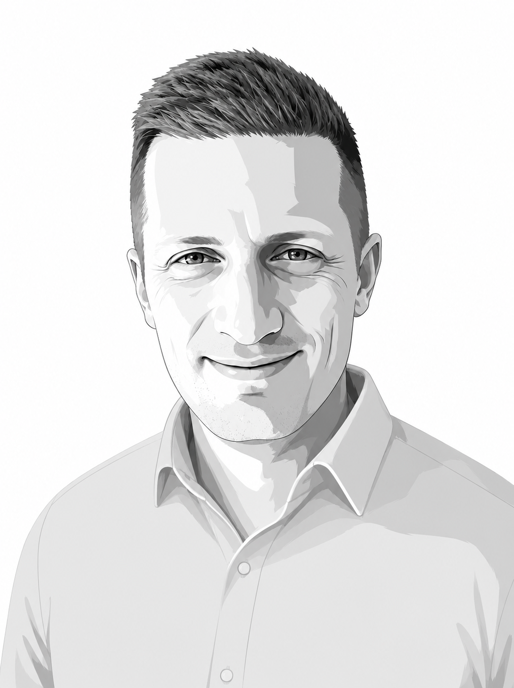
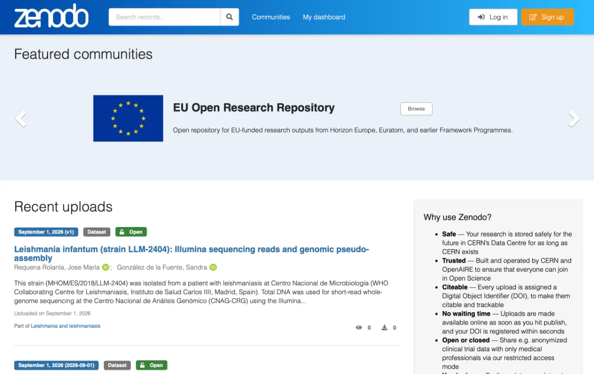

Geneva, Switzerland
Lars Holm Nielsen
Continuous Improvement Lead at CERN. For most of my career I've been a tools builder for research — lately I've been pointing that same instinct one level up, at how a whole organisation learns and improves.
What's driven me the whole way isn't a career plan but a deep curiosity about people, technology, and science.
I'm Danish, based near Geneva, and I try to stay practical and realistic about organisations and life — in all their messiness and their beauty. The work that lasts is rarely about imposing tidy systems on people; it's about paying real attention to how they actually work, and building with the grain of that.

Now
Continuous Improvement Lead
Organisational Support & Improvement (OSI) Department, CERN
Since January 2026
Talking more about how we do the work, not just the work itself.
Every day people at CERN already try to improve their work. What's new is the structure: I'm part of a small unit set up in January 2026 on Operational Excellence. My part is bringing structured methodologies, supporting teams as they improve, and removing barriers along the way. Continuous Improvement, for me, is bigger than any single framework — it grows out of years in software development: agile, retrospectives, and the everyday habit of a team getting steadily better at how it works together, and the challenges in sustaining the improvements.
Lean and Lean Six Sigma are where I'm primarily focused now: a toolbox and a set of principles that align closely with how I think. Alongside setting up the practice, I lead concrete improvement projects end-to-end, alongside the people closest to the work.
CERN, 2012 onward
Building the tools of open research
Roughly 14 years as a tools builder at CERN for research: making it easier for researchers worldwide to share, preserve, and reuse research in all its forms — and building the open-source communities around those tools.
Zenodo
Co-founded and helped lead it into a global open research repository used by 500,000+ people across 161 countries — somewhere any researcher can share and preserve their work, whatever form it takes.
zenodo.org →InvenioRDM
Built and nurtured a welcoming open-source community — a collaboration of 30+ research institutions across the world, and the platform under modern research data management.
inveniosoftware.org →Stewardship
Championed open science, FAIR research and open source community building — the tools mattered, but so did the stewardship and the people who kept them alive, also after I left. And I wrote my share of research funding proposals, and managed the associated projects.

1996 – 2012
How I got here

I built my first website in 1996 as a teenager on an Amiga 1200 running Apache and Perl CGI scripts — the prehistoric days of dial-up, when getting online meant tying up the family phone line and first winning the shared computer back from my brother.
What came after wasn't a plan so much as a series of things that caught my curiosity. ThinkQuest, the international contest for building educational websites, where I won several times with my team. My professional career started in 1999 at Xenux, a small Copenhagen startup. Then the Tycho Brahe Planetarium, where I built their website.
Afterwards astronomy — freelance and later on-site at the European Southern Observatory, building the tools behind the images: the FITS Liberator, which turns raw telescope data into the colourful pictures people actually see, and the websites for e.g. the Hubble Space Telescope.
You could draw a neat line through all of it, but there wasn't one at the time. Life takes you places you didn't plan; the curiosity is what carried me, eventually, to CERN in 2012.
How I work
People first, always
The work I'm proudest of isn't a repository or a process — it's the people I've helped grow. I build teams where honest feedback is normal, safe, and genuinely useful. The real measure has been people telling me, years later, that it made a lasting difference to them. But don't take my word for it — ask someone I've worked with.
Curiosity as a method
A deep interest in people, technology, and science is what got me here, and it's still how I meet a problem — understand it well enough before rushing to fix it.
Practical before ideal
I start from how people and organisations actually behave, not how magical thinking wishes they would. Messy reality is the material you design with.
Communities, not roll-outs
The improvements that last are owned by the people doing the work — whether that's an open-source community or a Continuous Improvement culture taking its first steps.
Rigour with a human grain
The methods — agile and retrospectives, Lean and Six Sigma, and a lot of years leading teams — give the structure; understanding how people really think and work is what makes change stick.
Never a solo act
Almost nothing in life is done alone. Everything here — the tools, the communities, the teams — was built with people, not by me on my own. I tend to say "we" because it's true.
Beyond CERN
Ethics & Professional Conduct Committee
I serve on the joint committee for the University of Geneva and HES-SO Geneva, mandate through 2029 — bringing research integrity and professional conduct into a formal advisory role.
About the name
Why "hankat"?
Hankat is Danish for tomcat. Back in 2001 I wanted something short and memorable for an email address, and even then a good domain was hard to come by — so this is what it turned into. I've since learned that, as a Dane, spelling it out to a French speaker here in the Geneva region can be its own small adventure.